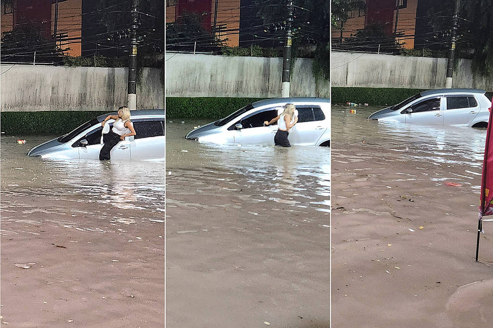

As últimas notícias do mundo
Publicado em 06 de março de 2024
O fechamento da agência de notícias Télam, coloca a população argentina diante de um “vazio de informação” e enfraquece a influência regional do país. Essa é a avaliação dos especialistas ouvidos pelo Brasil de Fato após a suspensão dos serviços da agência pelo governo de Javier Milei na segunda-feira (4), motivo de protesto dos trabalhadores diante da sede da empresa em Buenos Aires.
| Categoria | Autor |
|---|---|
| Atualidades | Leandro Melito |
Publicado em 5 de março de 2024
Para compartilhar esse conteúdo, por favor utilize o link https://www1.folha.uol.com.br/cotidiano/2024/03/chuva-coloca-cidade-de-sao-paulo-em-estado-de-atencao-para-alagamentos.shtml ou as ferramentas oferecidas na página. Textos, fotos, artes e vídeos da Folha estão protegidos pela legislação brasileira sobre direito autoral. Não reproduza o conteúdo do jornal em qualquer meio de comunicação, eletrônico ou impresso, sem autorização da Folhapress (pesquisa@folhapress.com.br). As regras têm como objetivo proteger o investimento que a Folha faz na qualidade de seu jornalismo. Se precisa copiar trecho de texto da Folha para uso privado, por favor logue-se como assinante ou cadastrado.
| Categoria | Autor |
|---|---|
| Chuva | Roberto Dias |